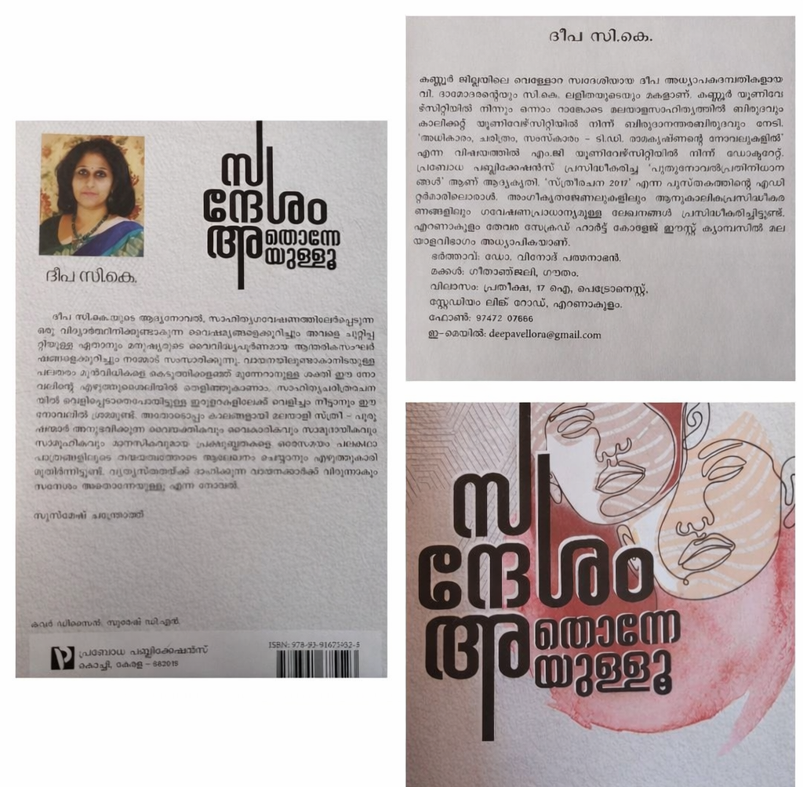

Author: ദീപ സി കെ
Review by: യശോദ ടീച്ചർ
ഇന്നലെ വായിച്ചു തീർന്ന ചെറിയ പുസ്തകം. നോവലിസ്റ്റിനെ നേരിട്ടറിയുന്നതുകൊണ്ടും അവളുടെ ആദ്യത്തെ നോവലായതു കൊണ്ടും താല്പര്യത്തോടെ വായിച്ചു. മനുഷ്യ ജീവിതത്തിൽ പ്രണയത്തിന് സുപ്രധാനസ്ഥാനമുണ്ടെന്നും പ്രണയം ഇല്ലാതാക്കുന്നിടത്ത് ജീവിതം അഭിനയിച്ചു തീർക്കാൻ തയ്യാറാകരുത് എന്നും പറഞ്ഞു വെക്കുന്നു നോവൽ. സോഷ്യൽ മീഡിയകളുടെ "മിസൈൽ മുന്നേറ്റങ്ങൾ" ക്കിടയിലും സന്ദേശകാവ്യപ്രസ്ഥാനത്തെ പറ്റി ഗവേഷണം നടത്തി ഡോക്ടറേറ്റ് നേടാൻ ശ്രമിക്കുന്ന നീലിമ യിലൂടെ വികസിക്കുന്ന കഥ. ഗൈഡിന്റെ നിസ്സഹകരണമോ സാഡിസ്റ്റ് രീതിയോ മൂലം ഗവേഷണം പൂർത്തിയാക്കാൻ സാധിക്കാത്ത നീലിമ. സമകാലികജീവിതത്തെ - പ്രത്യേകിച്ച് സ്ത്രീ ജീവിതത്തെ നേരിട്ടു പകർത്തുന്ന രീതിയിലുള്ള കഥയിൽ ഉർസുല, ഹരീഷ്, ശങ്കരാട്ടൻ, ഗാർഗി ടീച്ചർ തുടങ്ങി തിളങ്ങി നിൽക്കുന്ന കഥാപാത്രങ്ങൾ നിരവധി. 144 പേജുള്ള 150 രൂപ വിലയുള്ള പുസ്തകം പറയുന്നു - സന്ദേശം അതൊന്നേയുള്ളു, സത്യസന്ധമായ പ്രണയം.